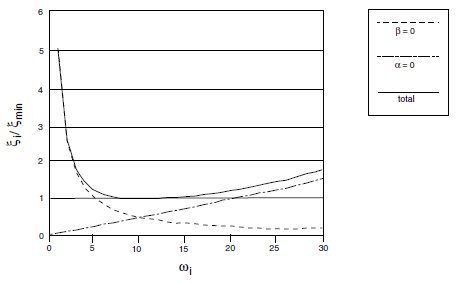
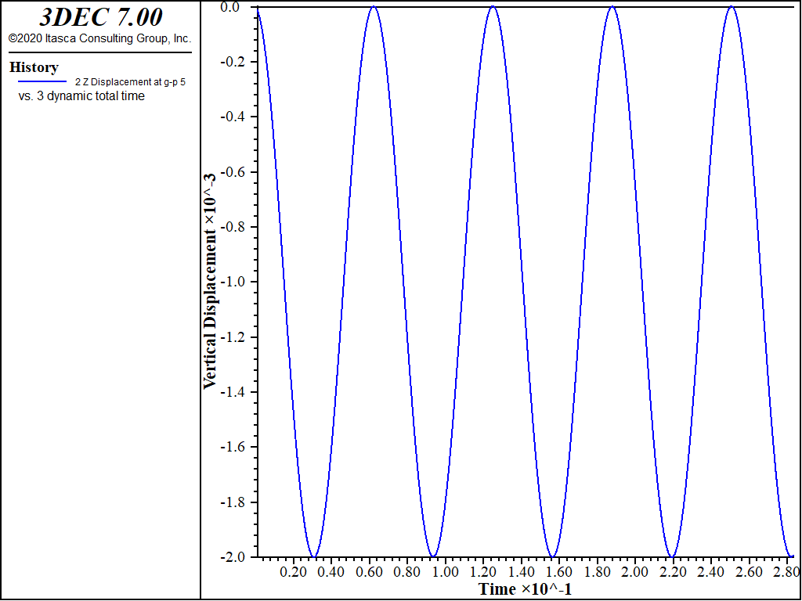
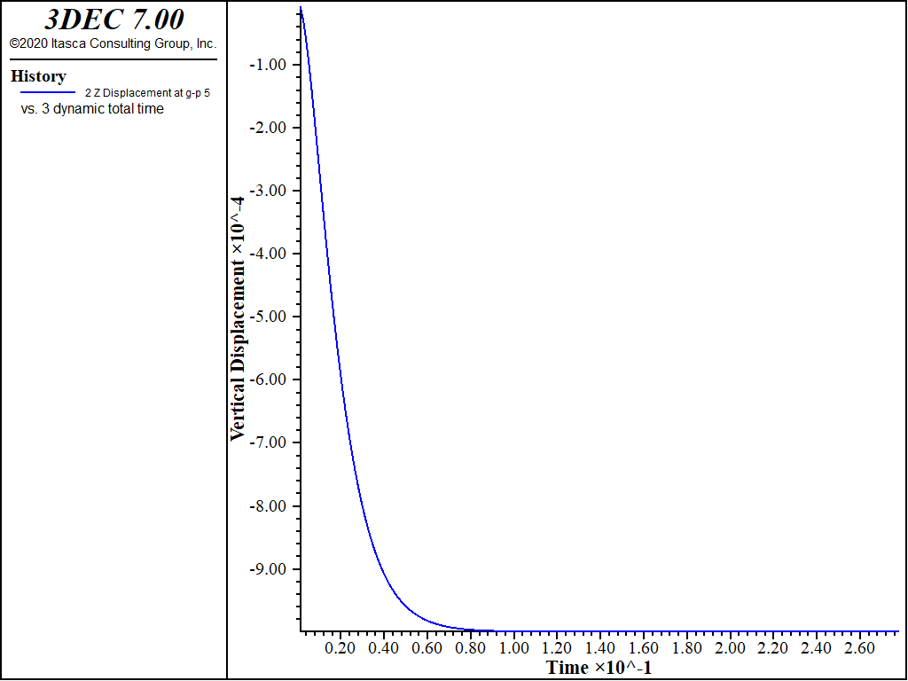
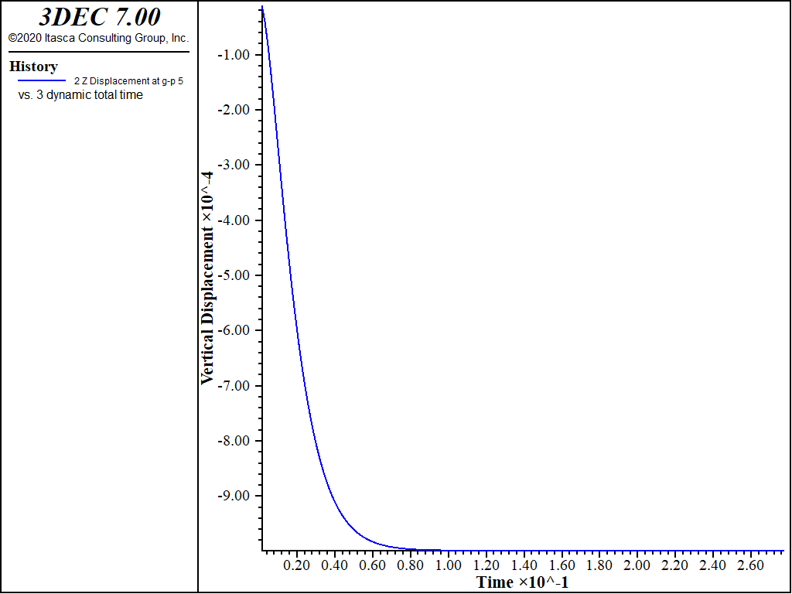
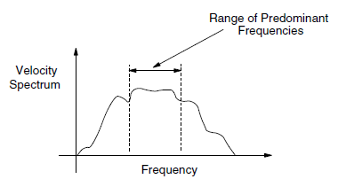

阻尼
一般性说明
如 3DEC 理论与背景（3DEC Theory and Background） 第一节所述，3DEC 采用动力算法求解问题。自然的动力系统都含有一定程度的系统内振动能量阻尼；否则，体系在驱动力作用下将无限振荡。阻尼部分源于以下能量损失：系统内块体沿接触面滑动引起的能量损失、完整材料中的内摩擦损失，以及结构周围空气或流体引起的任何阻力。3DEC 用于求解两大类力学问题：准静力问题和动力问题。两类问题的求解都使用阻尼，但准静力问题需要更大的阻尼。3DEC 中提供两种阻尼（质量比例阻尼和刚度比例阻尼）。质量比例阻尼施加的力与绝对速度和质量成比例，但方向与速度相反。刚度比例阻尼对接触或网格单元中的应力施加一个力，该力与增量刚度矩阵乘以相对速度或应变率成比例。在 3DEC 中，两种形式的阻尼可分别使用，也可组合使用。两种阻尼形式组合使用称为 Rayleigh 阻尼（Bathe 和 Wilson 1976）。采用有限差分格式求解准静力问题时，一般使用质量比例阻尼（Otter 等，1966）。3DEC 允许使用 Cundall（1982）开发的自动“自适应”黏性阻尼格式来求解准静力问题。这些格式在 3DEC 理论与背景（3DEC Theory and Background） 中讨论。对于动力分析，可使用质量比例阻尼或刚度比例阻尼，或两者兼用（即 Rayleigh 阻尼），如下一节所述。
瑞利阻尼
使用任何程序进行动力分析时，通常都需要考虑物理系统中的能量损失（例如热、滞回），而这些损失在数值算法中并未计入。一般来说，对高弹性体系使用很小的阻尼，而对岩土材料（尤其是土体）则使用较大的阻尼。
在结构的连续介质分析中，通常采用比例 Rayleigh 阻尼来衰减体系的固有振动模态。在动力有限元分析中，阻尼矩阵 \(C\) 由与质量矩阵（\(M\)）和刚度矩阵（\(K\)）成比例的分量构成，
其中：
\(\alpha\) = 质量比例阻尼常数；以及
\(\beta\) = 刚度比例阻尼常数。
对于多自由度体系，系统任意角频率 \(\omega_i\) 处的临界阻尼比 \(\xi_i\) 可由下式求得（Bathe 和 Wilson 1976）
或
临界阻尼比 \(\xi_i\) 也称为角频率为 \(\omega_i\) 的模态 \(i\) 的临界阻尼分数。
图 1（Figure 1） 给出了归一化临界阻尼比随角频率 \(\omega_i\) 的变化。图中给出三条曲线：仅有质量分量、仅有刚度分量，以及两种分量之和。如图所示，在较低的角频率范围内质量比例阻尼占主导，而在较高的角频率下刚度比例阻尼占主导。表示两种分量之和的曲线达到最小值的位置在
或
则基本频率定义为

图 1：归一化临界阻尼比随角频率的变化。
在 3DEC 中指定 Rayleigh 阻尼所需的输入参数为 \(f_{\min}\)（输入参数 freq）和 \(\xi_{\min}\)（输入参数 fcrit）。
对于 图 1（Figure 1） 所示的情况，\(\omega_{\min}\) = 10 弧度/秒，\(\xi_{\min}\) = 1。注意，在至少 3:1 的频率范围（例如从 5 到 15）内，阻尼比几乎是常数。由于已知地质介质中的阻尼以滞回阻尼为主（Gemant 和 Jackson，1937；Wegel 和 Walther，1935），因而与频率无关，故通常将 \(\omega_{\min}\) 选取在数值模拟所含频率范围的中心。这样即可近似模拟滞回阻尼。
由前述方程和 图 1（Figure 1） 可以看出，在频率 \(\omega_{\min}\)（或 \(f_{\min}\)）处、且仅在该频率处，质量阻尼和刚度阻尼各提供总阻尼的一半。
不同阻尼技术的示例
为了说明 Rayleigh 阻尼在 3DEC 中的作用，可比较以下四种阻尼情况的结果，这些情况均为一个块体置于固定块体之上并突然施加自重：
- 无阻尼；
- Rayleigh 阻尼（质量阻尼和刚度阻尼兼有）；
- 仅质量阻尼；以及
- 仅刚度阻尼。
这些情况各自的数据文件如下。
数据文件
; -------------------------------------------
; 重力作用下的块体——三种临界阻尼工况
; -------------------------------------------
model new
model config dynamic
model large-strain on
block create brick 0 10 0 1 0 10
block cut j-set or 0 0 5
block fix range pos-z 0 5
model grav 0 0 -10
block prop dens 1000
block contact gen-sub
block contact jmodel assign mohr
block contact property stiffness-normal 5e7 stiffness-shear 5e7
block contact material-table default property stiffness-normal 5e7 ...
stiffness-shear 5e7
block mechanical damp rayleigh 0 0
hist interval 1
block his vel-z pos 0 0 10
block his disp-z pos 0 0 10
model his dynamic time-total
model save "damp"
;无阻尼
model cycle 250
model title "Vertical displacement v time (undamped)
model save "damp-undamped"
;质量与刚度
model restore "damp"
hist interval 20
block mech damp rayleigh 1 16
model cycle 4321
model title "Vertical displacement v time (MASS & STIFFNESS DAMPED; damp 1 16)"
model save "damp-mass-stiff"
;仅质量
model rest "damp"
block mech damp rayleigh 2 16 mass
model cycle 250
model title "Vertical displacement v time (MASS DAMPED; damp 2 16 mass)"
model save "damp-mass"
;仅刚度
model rest "damp"
hist interval 50
block mech damp rayleigh 2 16 stiff
model cycle 8623
model title "Vertical displacement v time (STIFFNESS DAMPED; damp 2 16 stiff)"
model save "damp-stiff"
;
program return
在第一种情况下（无阻尼），可观察到约 16 周/秒的固有振动频率（见 图 2（Figure 2））。理论振动周期由下式给出
频率 = \({{1} \over {2 \pi}}\ \bigl( {{ka} \over {m}}\bigr)^{1/2}\) = 15.9 周/秒
其中：
\(a\) = 节理面积（本例中为 10 m2）；
\(k\) = 节理刚度（5e7 Pa/m）；以及
\(m\) = 上部块体的质量（5e4 kg）。
若指定临界阻尼比 = 1、指定固有振动频率 = 16，并同时使用质量阻尼和刚度阻尼，则该问题处于临界阻尼状态。
图 3（Figure 3） 中的结果表明，采用这些参数时该问题处于临界阻尼状态。若仅使用质量阻尼（图 4（Figure 4））或刚度阻尼（图 5（Figure 5）），则必须将阻尼加倍（因为二者各对 Rayleigh 阻尼贡献 1/2）才能获得临界阻尼。图 4 和图 5 再次表明，在指定两倍阻尼的情况下同时使用质量阻尼和刚度阻尼时，该问题处于临界阻尼状态（见上文数据文件）。


图 2：突然施加自重时，与刚性基座接触的单个块体的竖直位移随时间变化的曲线（无阻尼）。


图 3：突然施加自重时，与刚性基座接触的单个块体的竖直位移随时间变化的曲线（质量阻尼和刚度阻尼）。



图 5：突然施加自重时，与刚性基座接触的单个块体的竖直位移随时间变化的曲线（仅刚度阻尼）。
动力分析中 Rayleigh 阻尼参数选取准则
动力分析中通常试图做到的是，在正确的水平上再现材料与频率无关的阻尼（例如地质材料为 2-5%，结构体系为 2-10%（Biggs 1964））。Rayleigh 阻尼与频率相关，但具有一个约覆盖 3:1 频率范围的“平坦”区，如 图 1（Figure 1） 所示。对于任何具体问题，对典型速度记录进行傅里叶分析可能得到如 图 6（Figure 6） 所示的响应。

图 6：速度谱随频率变化的曲线。
若最高卓越频率是最低卓越频率的三倍，则存在一个 3:1 的跨度或范围，其中包含谱内的大部分动力能量。动力分析的思路是调整 Rayleigh 阻尼的 \(\omega_{\min}\)，使其 3:1 范围与问题中卓越频率的范围一致。调整 \(\xi_{\min}\) 使其与正确的物理阻尼比一致。卓越频率既不是输入频率，也不是体系的固有模态，而是二者的组合。其思路是设法对问题中重要的频率取得正确的阻尼。
对于某些涉及块体大位移的问题，不宜使用任何质量阻尼，因为块体运动可能被人为地限制。此类问题的例子包括涉及块体在重力作用下自由流动或下落的问题，以及爆炸引起的块体冲击荷载问题。在这些情况下，可能适合仅使用刚度比例阻尼。
Rayleigh 阻尼中的刚度比例分量确实会影响 3DEC 显式求解格式的临界时步。因此，随着刚度阻尼分量的增大，控制时步将会减小（见 Belytschko，1983）。对于涉及块体自由下落并从固定基座“弹跳”的问题，为准确建模需要用到恢复系数。Onishi 等人（1985）给出了一种基于恢复系数估算刚度阻尼参数的方法。
| 这些内容对您有帮助吗？… | FLAC3D © 2019, Itasca | 原文更新于 2020 年 10 月 8 日 |